Side Projects
Sound Detector
A table tennis app to help you keep track of when a ping pong ball bounces on a paddle.
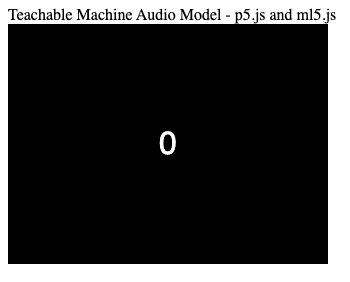
Places Traveled
Developed this tool as a data science intern.
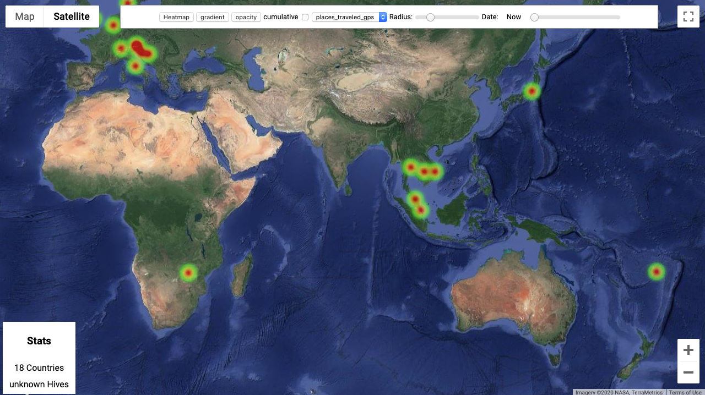
Contact Tracing
A simple idea to help professionals build a contact tracing system by themselves.
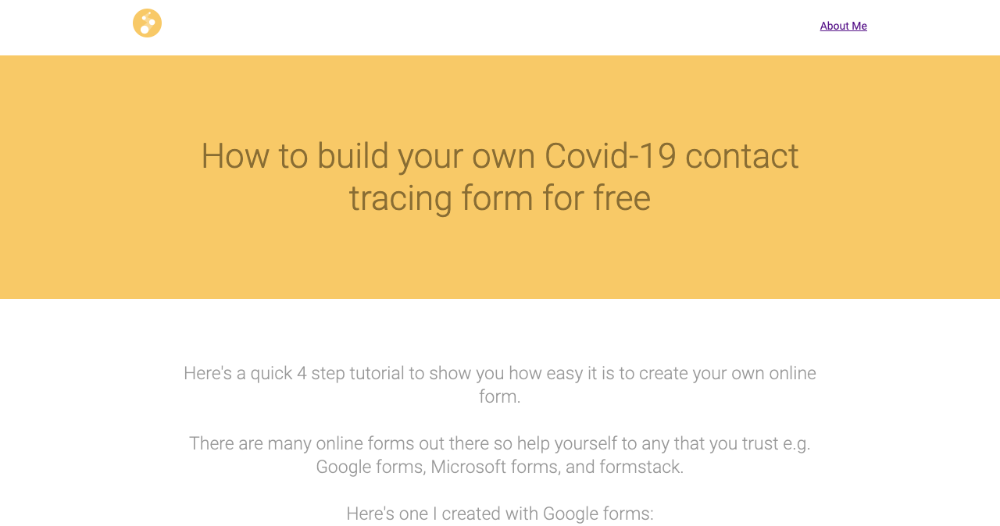
Face Recognition
Turn your face into a controller. This app can be used to play your own walk in music, fend off robbers with barking noises, and doesn't require training. Works on your GoPro too!
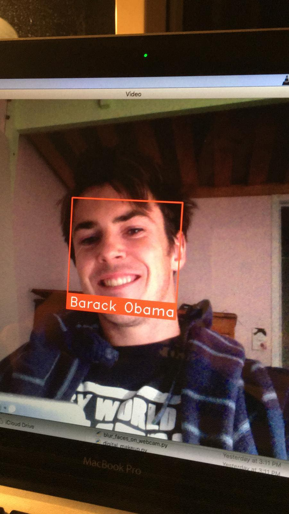
Productivity Motivator
Eliminate your bad habbits, stop randomly searching the web, and get points!
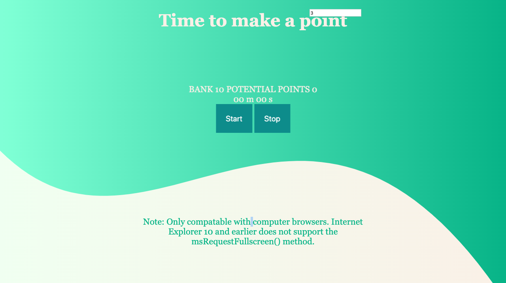
Twitter Sentiment Analyser
Search for a Tweet and analyse people's feelings
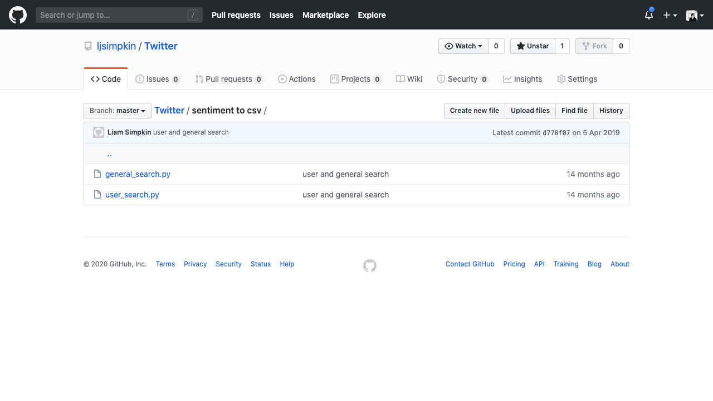
Libft
Yes, I recoded the C standard library. Even print character.
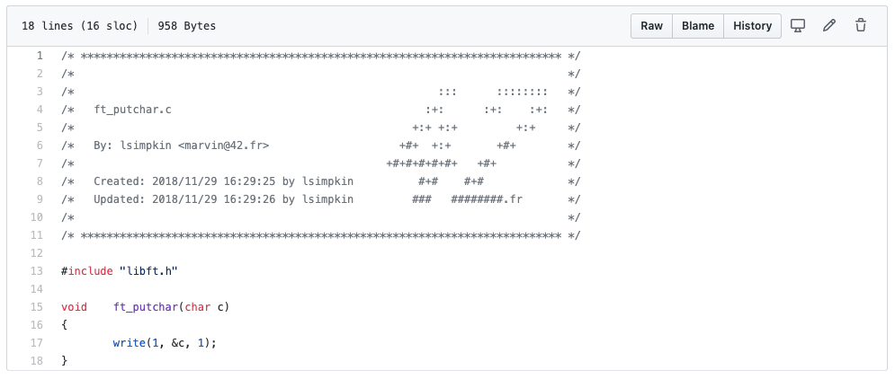
Sudoku Solver
Don't do it by hand, get the computer to.
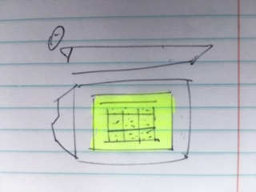
What I learnt from my time doing door to door sales
Reflection on my uni sales job
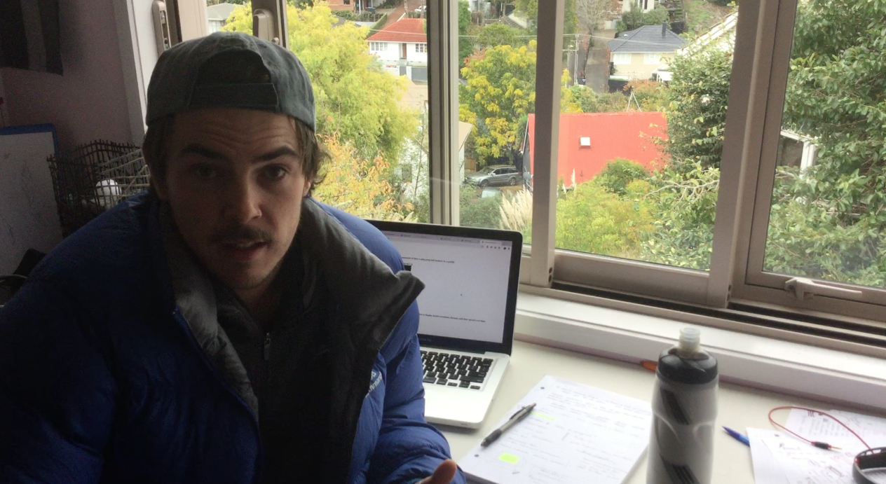
Light pollution's effect on insects
A university research project on the effect of light at night
video
Built in Obsolescence Yarn
Are products built to last?
Opinion
Diving
So awesome!
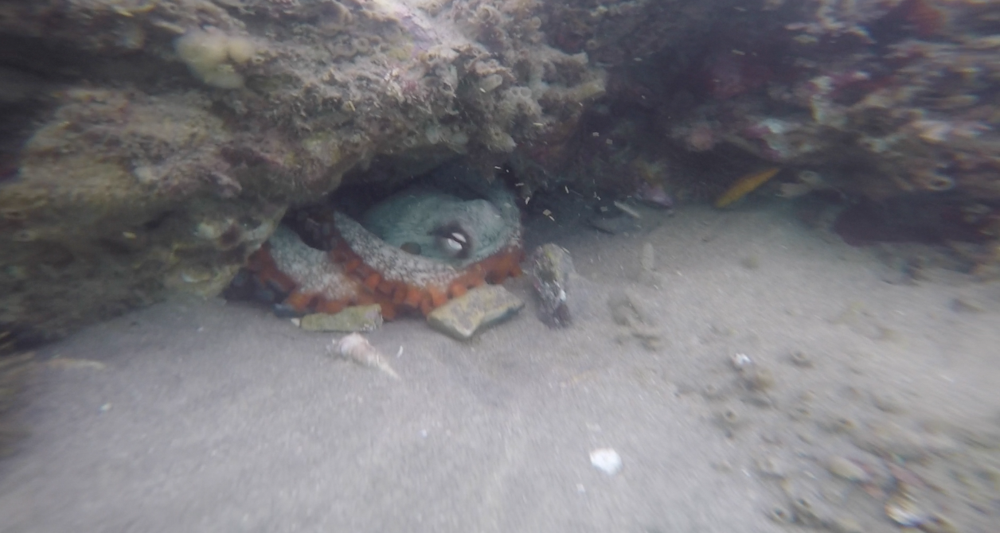
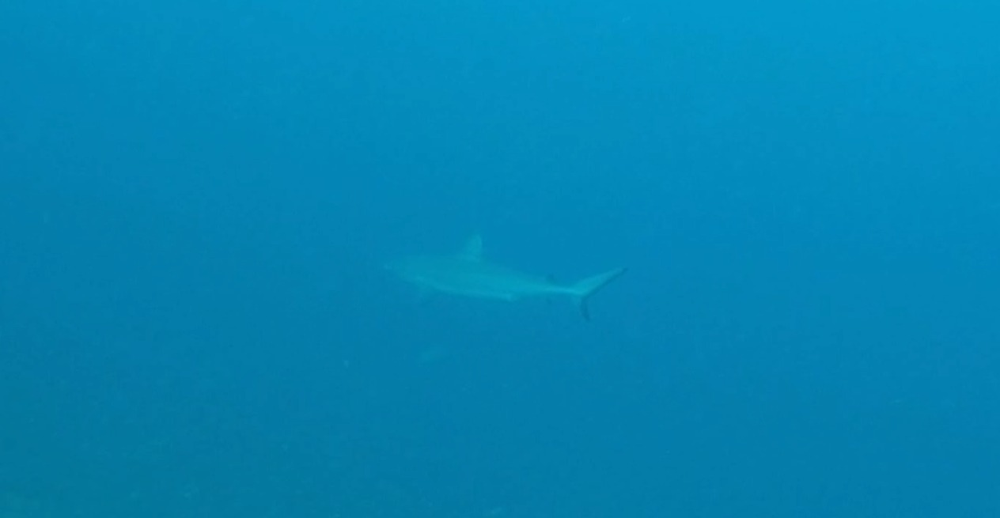
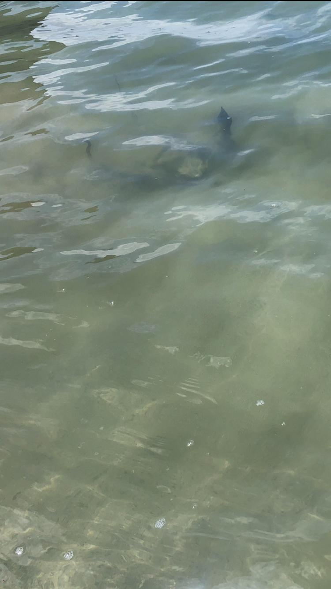
Neural Networks
Number identification project from Andrew Ng's Stanford Coursera class
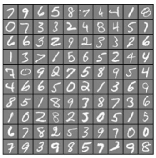
Hiking
A quick stroll up Yosemite
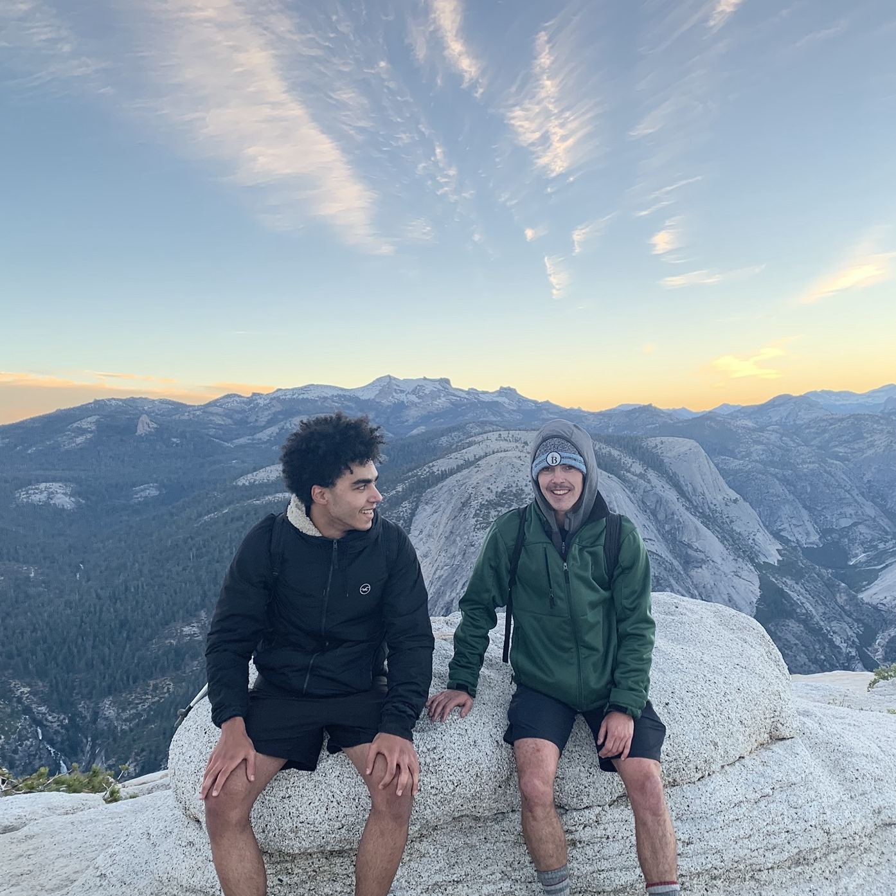
Thai Kickboxing
Awesome training camp in Bangkok

Fast food in Japan
Healthier than my home cooked slow food
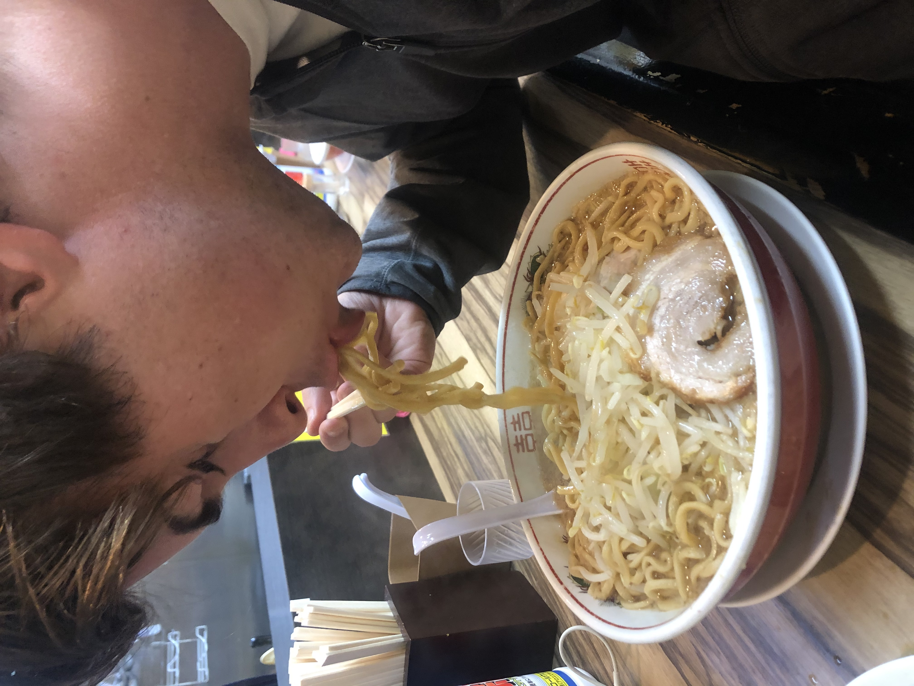
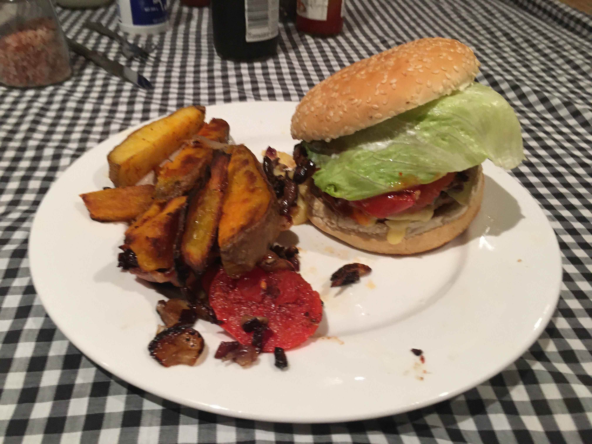
Abel Tasman Kayak
In an inflatable raft
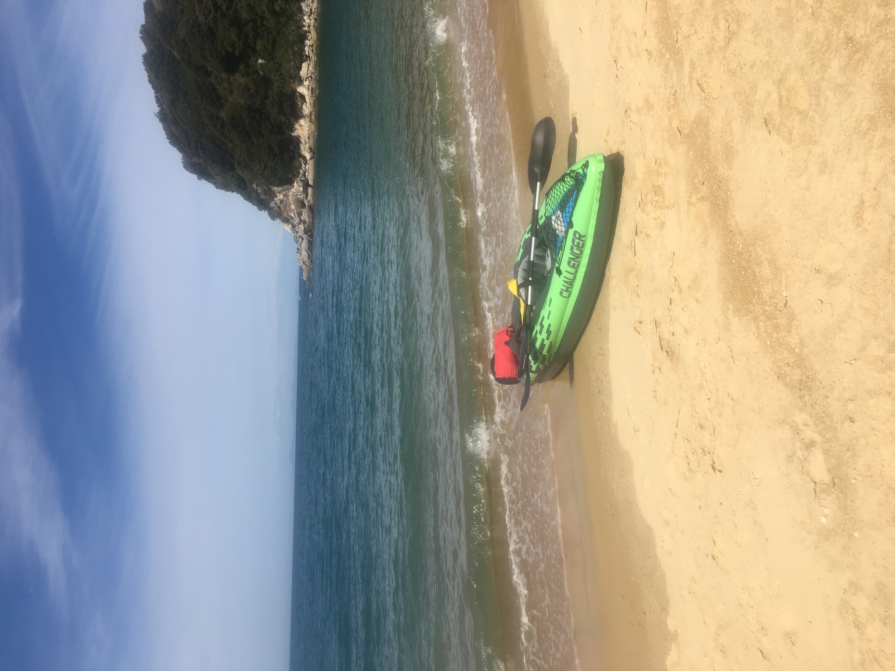
The future of energy
Interview with Shannon, CMO of Solar Block
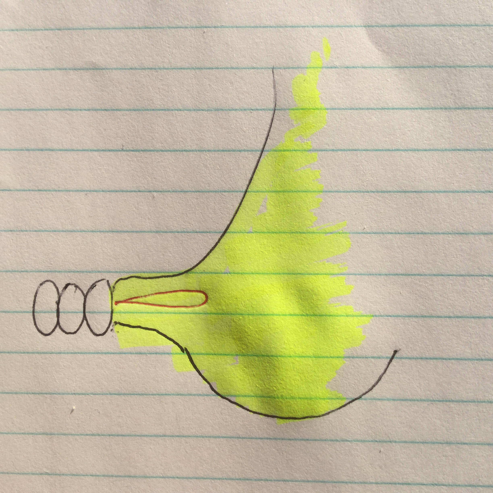
The future of Genetics
Feel the excitment as founder Zack shares his thoughts.